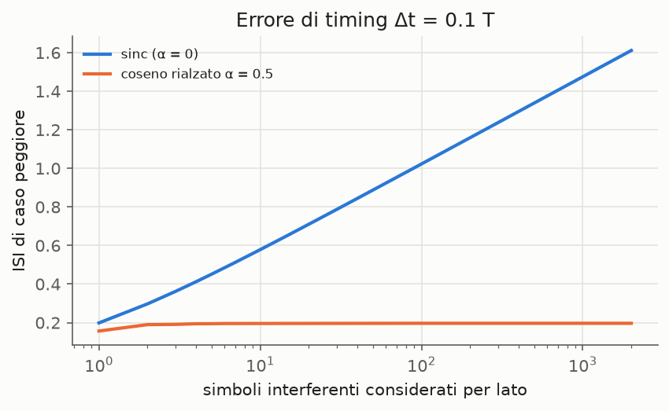
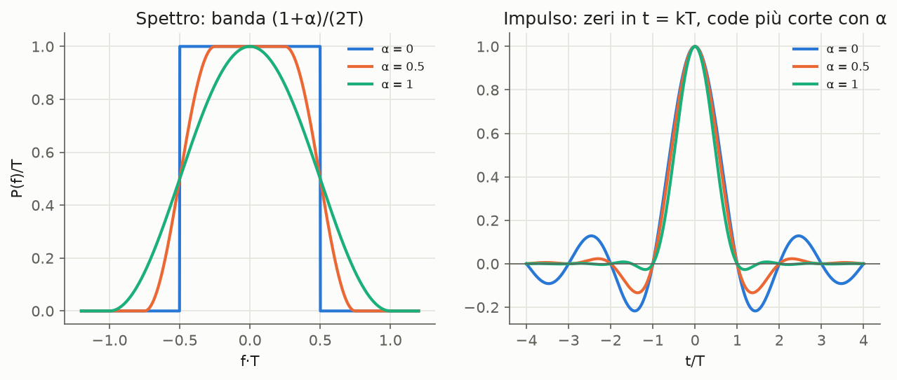

Home · Lezioni · Lezione 14 · 16/11
Segnalazione su canali a banda limitata
Interferenza intersimbolica, criterio di Nyquist, coseno rialzato, equalizzazione, MLSE e algoritmo di Viterbi.
Indice della lezione
- Canali a banda limitata e interferenza intersimbolica
- Introduzione (1/2)
- Introduzione (2/2)
- Effetto del rumore: perdita di SNR
- Effetto dell'ISI: BER irriducibile
- Modulazione lineare
- Modello del sistema
- Interferenza intersimbolica (1/4)
- Interferenza intersimbolica (2/4)–(3/4)
- Interferenza intersimbolica (4/4)
- Progetto del segnale a ISI nulla: criterio di Nyquist
- Signal design per ISI nulla (1/2)
- Signal design per ISI nulla (2/2)
- Il criterio nel dominio della frequenza (1/2)
- Il criterio nel dominio della frequenza (2/2)
- Impulso di Nyquist ideale (1/4)–(2/4)
- Impulso di Nyquist ideale (3/4)–(4/4)
- Difficoltà pratiche (1/3)
- Difficoltà pratiche (2/3)–(3/3): errore di timing
- Lo spettro a coseno rialzato
- Raised cosine (1/5)
- Raised cosine (2/5)–(3/5)
- Raised cosine (4/5)–(5/5)
- Osservazioni: impulso a radice di Nyquist
- Efficienza di banda con ISI nulla
- Equalizzazione
- Problemi nel soddisfare la condizione di ISI nulla
- Tipi di equalizzatori
- Stima di sequenza a massima verosimiglianza
- MLSE (1/2)
- MLSE (2/2)
- Il criterio MLSE (1/3)
- Il criterio MLSE (2/3)
- Il criterio MLSE (3/3)
- Il rivelatore di sequenza ML
- L'algoritmo di Viterbi
- Algoritmo di Viterbi (1/2)
- Algoritmo di Viterbi (2/2)
- I passi chiave: add, compare, select
- Il VA applicato alla MLSE (1/3)
- Il VA applicato alla MLSE (2/3)–(3/3)
- Spiegazioni e dimostrazioni passo-passo
- Domande da esame
Il corso, slide per slide
Canali a banda limitata e interferenza intersimbolica
Introduzione (1/2)
- Nella trasmissione su canale AWGN non c'è limite sulla banda del canale: E_b/N_0 è l'unico fattore che determina le prestazioni del ricevitore.
- Un canale reale non è solo rumoroso: ha anche banda finita. Se un impulso rettangolare, che rappresenta un simbolo, attraversa un canale a banda limitata, all'uscita la sua forma è distorta.
- Appunti (schizzo): finora il canale era un sommatore, s(t)+n_p(t); adesso è un blocco canale seguito dal sommatore del rumore. Il canale non è solo un sommatore: ha una propria risposta impulsiva che modifica lo spettro del segnale in ingresso, e non è un sistema identico.
Introduzione (2/2)
- I lobi laterali dell'impulso distorto sono una sorgente di distorsione detta interferenza intersimbolica (ISI), perché degrada i simboli adiacenti.
- Differenza fondamentale tra ISI e rumore:
- il rumore è indipendente dal segnale trasmesso: il suo effetto compare all'ingresso del ricevitore appena si accende il sistema;
- l'ISI dipende dal segnale: scompare solo quando si spegne il segnale trasmesso (appunti: dipende dal segnale trasmesso, a differenza del rumore termico).
Effetto del rumore: perdita di SNR
- Un sistema ha BER teorica data dalla curva continua in funzione di E_b/N_0; se le prestazioni seguono invece la curva tratteggiata, si ha una perdita di SNR, causata da perdite di segnale o da un aumento di rumore o interferenza.
- Per BER =10^{-5} la curva teorica richiede E_b/N_0=10 dB; quella tratteggiata 12 dB: servono 2 dB in più. È un problema soprattutto per i sistemi limitati in potenza.
- Figura: BER da 1 a 10^{-5} in funzione di E_b/N_0 da -10 a 12 dB; la curva tratteggiata è la continua traslata di 2 dB a destra.
Effetto dell'ISI: BER irriducibile
- Se il sistema è degradato da rumore e ISI, nessun aumento di E_b/N_0 risolve il problema: la curva presenta un pavimento (BER floor, attorno a 10^{-4} nella figura), e aumentare E_b/N_0 non serve se il pavimento sta sopra la BER richiesta.
- Il rimedio è l'equalizzazione: poiché l'ISI è causata dal filtraggio nel trasmettitore e nel canale, l'equalizzazione è il processo che inverte questi effetti di filtraggio non ottimi.
Modulazione lineare
- Forma d'onda trasmessa in banda base complessa per modulazione lineare bidimensionale (PSK o QAM):
- s(n)=s_1(n)+js_2(n), n\in\mathbb Z, sono i simboli complessi associati a b=\log_2M bit, presi da una costellazione fissa s(n)\in\{s_1,\dots,s_M\}, M=2^b, s_i=s_{i1}+js_{i2}; g(t) è un impulso di sagomatura fisso in banda base.
- Symbol rate (baud rate) 1/T, con T=bT_b intervallo di simbolo e T_b intervallo di bit; bit rate R_b=b/T=(\log_2M)/T bit/s.
- La PAM è il caso particolare della (1) con simboli reali (costellazione monodimensionale).
Modello del sistema
- Schema: s(n) (impulsi distanti T) → filtro di trasmissione g(t) → u(t) (impulsi sagomati) → canale h(t), a cui si somma il rumore → filtro di ricezione c(t) → campionatore a t=kT → decisore.
- Appunti: si fa riferimento solo agli inviluppi complessi; il canale è un sistema non trasparente; il campionatore in prima ipotesi è perfettamente sincronizzato.
Interferenza intersimbolica (1/4)
- Si usa la rappresentazione in banda base complessa di segnali e filtri e si suppone sincronizzazione perfetta.
- L'inviluppo u(t) è modificato dal canale a banda limitata di risposta impulsiva h(t): il segnale ricevuto in banda base è x(t)=u(t)\ast h(t)+n(t), con n(t) WGN.
- In AWGN, con h(t)=\delta(t), il rivelatore ottimo (simbolo per simbolo) è la cascata filtro adattato + campionatore.
- Su canale a banda limitata si vuole un ricevitore fatto da un filtro lineare (filtro di ricezione) di risposta c(t) seguito da un campionatore a rate 1/T; i campioni di y(t) presi ogni T secondi vanno al decisore.
Interferenza intersimbolica (2/4)–(3/4)
- A meno di un fattore di scala, il segnale senza rumore all'uscita del filtro di ricezione è
- Nell'argomento di p(t-nT) andrebbe un ritardo t_0 che rappresenta il ritardo di trasmissione; lo si pone a zero senza perdita di generalità.
- L'impulso complessivo è una doppia convoluzione (3); in frequenza la convoluzione diventa prodotto:
Interferenza intersimbolica (4/4)
- Campionando all'istante t_k=kT, k\in\mathbb Z (appunti: si vuole ottenere il simbolo k-esimo):
con l'impulso normalizzato, p(0)=1 (appunti: il primo termine sarebbe s(k)p(0), e si normalizza come se si avesse un amplificatore in ricezione).
- s(k) è il contributo del simbolo k-esimo; la somma è l'effetto residuo di tutti gli altri simboli sulla decisione del k-esimo, dovuto agli impulsi prima e dopo l'istante di campionamento: è l'ISI (appunti: due contributi per il simbolo k-esimo, il secondo è il termine di ISI, che dipende dai simboli precedenti e successivi).
- Senza ISI la somma è nulla ⇒ il modello del segnale è lo stesso del canale AWGN.
- Appunti: con il rumore y_k=p(0)s(k)+i(k)+n(k), mentre in AWGN si aveva y_k=s_kp(0)+n(k). Il termine i(k) è il motivo del BER floor: a basso E_b/N_0 domina il rumore, ad alto domina i(k), che non diminuisce aumentando la potenza.
Progetto del segnale a ISI nulla: criterio di Nyquist
Signal design per ISI nulla (1/2)
- Problema: costruire l'impulso complessivo p(t) dell'intero sistema in modo che il ricevitore possa ricostruire esattamente la sequenza di dati in ingresso al trasmettitore. La segnalazione sul canale a banda limitata diventa senza distorsione: è un problema di progetto del segnale.
- Gli impulsi sovrapposti si configurano in modo che all'uscita del ricevitore non interferiscano tra loro negli istanti di campionamento t_k=kT.
- In tal caso la rivelazione simbolo per simbolo, ottima in AWGN, resta ottima anche sul canale a banda limitata.
- Appunti: posso costruire g(t) e c(t) in modo che il contributo dell'ISI sia annullato ⇒ si ottiene il teorema di Nyquist.
Approcci per il trattamento dell'ISI (appunti)
- Algoritmo di Viterbi: sceglie la sequenza di simboli più verosimile (MLSE) percorrendo un traliccio, senza provare tutte le sequenze possibili.
- Equalizzatori: filtri al ricevitore che compensano la distorsione del canale e riducono l'ISI residua (lineari ZF e MMSE, oppure DFE).
- OFDM: divide la banda in molte sottoportanti strette, ognuna vista come un canale piatto; i simboli diventano lunghi e l'ISI trascurabile.
🧩 Le descrizioni sono mie: Viterbi ed equalizzatori si vedono alla fine di questa lezione, l'OFDM nelle slide non c'è ancora.
Signal design per ISI nulla (2/2)
- Il criterio di progetto è l'eliminazione dell'ISI dalla sequenza campionata y(t_k). Il criterio di Nyquist richiede
- Un impulso che soddisfa la (4) si chiama impulso di Nyquist. Non è unico: molte forme d'impulso soddisfano il criterio.
Il criterio nel dominio della frequenza (1/2)
- Treno periodico di delta distanti T:
- La (4) equivale a p(t)\,\Delta_T(t)=\sum_mp(mT)\,\delta(t-mT)=\delta(t).
- Trasformando entrambi i membri (la trasformata del treno di delta è \frac1T per un treno di delta distanti 1/T in frequenza):
con R_s=1/T symbol rate in simboli/s. (La slide dice «trasformando la (16)»: si riferisce all'uguaglianza appena scritta.)
Il criterio nel dominio della frequenza (2/2)
- La condizione per ISI nulla in frequenza è
- Criterio di Nyquist in frequenza: P(f) elimina l'ISI per campioni presi a intervalli T se soddisfa la (6). P(f) si riferisce all'intero sistema: filtro di trasmissione, canale e filtro di ricezione.
Impulso di Nyquist ideale (1/4)–(2/4)
- Il modo più semplice di soddisfare la (6) è uno spettro rettangolare:
La banda (monolatera) in banda base è 1/(2T)=R_s/2: non servono frequenze oltre metà del symbol rate.
- W_N\triangleq1/(2T)=R_s/2 è la banda di Nyquist.
- La forma d'onda a ISI nulla è la sinc: p(t)=\text{sinc}(2W_Nt)=\text{sinc}(t/T), detta impulso di Nyquist ideale, ideale perché la sua trasformata è nulla fuori dall'intervallo di Nyquist. Appunti: soddisfa il criterio di Nyquist con la minima occupazione di banda.
- Figura, modulazione binaria (T=T_b, R_s=R_b, W\equiv W_N): (a) risposta in ampiezza ideale, |P(f)|=1/(2W) per |f|<W; (b) impulso p(t), con zeri in t=\pm T_b,\pm2T_b,\dots
Impulso di Nyquist ideale (3/4)–(4/4)
- p(t) è la risposta impulsiva di un passa-basso ideale con ampiezza in banda passante 1/(2W_N) e banda W_N.
- p(t) ha il picco nell'origine e si annulla nei multipli interi di T: se y(t) è campionato in t=0,\pm T,\pm2T,\dots, gli impulsi s(n)\,p(t-nT) non interferiscono tra loro.
- Figura: modulazione binaria, somma di sinc per la sequenza di bit 1011010; in ogni istante di campionamento conta solo l'impulso centrato lì.
Difficoltà pratiche (1/3)
- L'impulso di Nyquist ideale è economico in banda (ISI nulla con la minima banda possibile), ma ha due difficoltà pratiche:
- richiede |P(f)| piatto da -W_N a +W_N e nullo altrove: è fisicamente irrealizzabile (non causale), perché le transizioni brusche a \pm W_N violano il criterio di Paley-Wiener;
- p(t) decresce come 1/|t| per |t| grande: decadimento lento, dovuto anch'esso alla discontinuità di P(f) in \pm W_N. Non c'è praticamente margine d'errore sugli istanti di campionamento.
Difficoltà pratiche (2/3)–(3/3): errore di timing
- Si campiona in t_k=kT+\Delta t, con \Delta t errore di timing; con k=0 e senza rumore:
- Separando il termine n=0:
Il primo termine è il simbolo desiderato, la serie è l'ISI causata da \Delta t. La serie può divergere, causando decisioni errate.
Lo spettro a coseno rialzato
Raised cosine (1/5)
- Si superano le difficoltà estendendo la banda dal minimo W_N=R_s/2=1/(2T) a un valore regolabile tra W_N e 2W_N.
- Un decadimento più rapido nel tempo implica un decadimento più lento in frequenza ⇒ serve banda in eccesso oltre il minimo di Nyquist: si scambia banda per un progetto più robusto agli errori di timing.
- Si impone a P(f) una condizione più stringente di quella dell'impulso ideale:
Raised cosine (2/5)–(3/5)
- Una forma con molte proprietà desiderabili è lo spettro a coseno rialzato: una parte piatta e una parte di roll-off sinusoidale,
- \alpha\in[0,1] è il fattore di roll-off: indica la banda in eccesso rispetto alla soluzione ideale W_N=1/(2T). La nuova banda (monolatera) è W_N(1+\alpha).
- Antitrasformando:
Raised cosine (4/5)–(5/5)
- Figura, modulazione binaria (T=T_b): (a) risposta in frequenza e (b) risposta impulsiva per diversi roll-off.
- p(t) è il prodotto di due fattori: \text{sinc}(t/T), che garantisce gli zeri negli istanti t=kT, e un secondo fattore che decresce come 1/|t|^2 per |t| grande e riduce molto le code rispetto all'impulso ideale: la trasmissione diventa relativamente insensibile agli errori di campionamento.
- Queste due proprietà sono molto utili per estrarre dal segnale ricevuto l'informazione di timing ai fini della sincronizzazione. Il prezzo è una banda maggiore di quella del canale di Nyquist ideale (\alpha=0).
Osservazioni: impulso a radice di Nyquist
- Il criterio di Nyquist riguarda la cascata di filtro di trasmissione, canale e filtro di ricezione; ma il canale di solito non è sotto controllo.
- In pratica si progettano trasmettitore e ricevitore in modo che G(f)\,C(f) sia di Nyquist, e l'ISI introdotta dal canale si tratta a parte.
- Scelta tipica: G(f) e C(f) radici quadrate (in frequenza) di un impulso di Nyquist: impulso a radice di Nyquist (square root Nyquist).
Efficienza di banda con ISI nulla
- In assenza di ISI l'efficienza di banda è \eta_B=R_b/W (bit/s/Hz): \eta_B=2\log_2M per modulazione lineare monodimensionale, \eta_B=\log_2M per bidimensionale (Lezione 12).
- Noti R_b ed \eta_B, la banda (monolatera) minima senza ISI è W=R_b/\eta_B; con la banda in eccesso del coseno rialzato la banda effettiva è
Equalizzazione
Problemi nel soddisfare la condizione di ISI nulla
- Progettare il sistema con il criterio di Nyquist ha tre limiti pratici:
- la risposta h(t) del canale deve essere nota al trasmettitore, per fare in modo che g(t)\ast h(t)\ast c(t) sia un coseno rialzato; in molti scenari non sono disponibili stime affidabili di h(t) al trasmettitore;
- i filtri di trasmissione e ricezione vanno progettati sulla risposta del canale, cosa irragionevole in ambienti tempo-varianti;
- in pratica si può rinunciare alla condizione di ISI nulla ⇒ serve un equalizzatore al ricevitore.
- Si chiama equalizzazione qualunque tecnica di elaborazione o filtraggio progettata per eliminare o ridurre l'ISI.
Tipi di equalizzatori
- L'equalizzazione si divide in lineare e non lineare.
- Le tecniche lineari, come zero-forcing (ZF) e minimum mean-square error (MMSE), sono le più semplici da realizzare e da capire, ma in genere soffrono di più amplificazione del rumore.
- Tra le non lineari la più comune è la decision-feedback equalization (DFE), abbastanza semplice e di solito efficace; su canali a basso SNR soffre di propagazione degli errori quando i bit sono decisi in modo errato.
- La tecnica ottima è la maximum likelihood sequence estimation (MLSE), la cui complessità cresce esponenzialmente con la memoria del canale: è impraticabile sulla maggior parte dei canali d'interesse.
- Figura: albero degli equalizzatori. Tipi: lineari e non lineari (DFE, MLSE). Strutture: transversal e lattice (lineari e DFE), transversal channel estimator (MLSE). Algoritmi di aggiornamento dei coefficienti: LMS, RLS, Fast RLS, Square-Root LS (strutture transversal), Gradient RLS (lattice).
Stima di sequenza a massima verosimiglianza
MLSE (1/2)
- La MLSE evita l'amplificazione del rumore perché non usa un filtro equalizzatore: stima la sequenza dei simboli trasmessi.
- Inviluppo trasmesso u(t)=\sum_ns(n)\,g(t-nT); uscita del canale senza rumore
con q(t)=g(t)\ast h(t), risposta combinata di sagomatura e canale.
- In pratica q(t) è causale e a memoria finita: q(t)\equiv0 per t\notin[0,LT], con L memoria del canale in intervalli di simbolo.
MLSE (2/2)
- Noto q(t), la MLSE sceglie la sequenza di simboli che massimizza la verosimiglianza del segnale ricevuto.
- Lavora su trasmissioni successive viste come un unico «simbolo a blocco»: per un messaggio di K+1 simboli di una costellazione di cardinalità M bisogna scegliere tra M^{K+1} messaggi. Con la forza bruta, 1000 simboli QPSK richiedono una complessità 4^{1000}.
- Si considera il blocco \mathbf s=[s(0),s(1),\dots,s(K)]^T trasmesso per t\in[0,KT].
Il criterio MLSE (1/3)
- La log-verosimiglianza della sequenza \mathbf s è (vedi la rivelazione)
con r(t)=y(t)+w(t), w(t) rumore gaussiano additivo di PSD \sigma^2, e y(t)=\sum_{n=0}^Ks(n)\,q(t-nT) forma d'onda senza rumore associata a \mathbf s.
- L'intervallo d'osservazione \mathcal T è abbastanza lungo da contenere per intero q(t),q(t-T),\dots,q(t-KT).
Il criterio MLSE (2/3)
- Sostituendo y(t):
- Si definiscono
Il criterio MLSE (3/3)
- \alpha(n) si ottiene passando r(t) in un filtro adattato di risposta q^\ast(-t) e campionandone l'uscita in t_n=nT.
- \beta_{m,n} dipende da m e n separatamente, ma con \mathcal T abbastanza lungo \beta_{m,n}=\beta_{m-n}.
- La regola MLSE è
- La complessità cresce esponenzialmente con il numero di simboli trasmessi. L'algoritmo di Viterbi la riduce: diventa esponenziale nella memoria del canale ma lineare nel numero (di solito molto maggiore) di simboli.
Il rivelatore di sequenza ML
- Per la regola MLSE serve prima la sequenza \alpha(n), uscita di un unico filtro adattato.
- Poi bisogna massimizzare \lambda(y)\triangleq\text{Re}\big[\sum_ns^\ast(n)\alpha(n)\big]-\frac12\sum_n\sum_ms(n)s^\ast(m)\beta(n-m) su tutte le sequenze: il filtro adattato è seguito da un processore, il rivelatore di sequenza ML, che sceglie tra le M^{K+1} sequenze quella che massimizza \lambda(y).
- L'algoritmo di Viterbi fa questa scelta in modo efficiente: si applica ai problemi di massimo (o minimo) formulabili come ricerca del cammino di lunghezza massima (o minima) in un traliccio finito.
L'algoritmo di Viterbi
Algoritmo di Viterbi (1/2)
- L'algoritmo di Viterbi (VA) cerca, tra i cammini che attraversano un traliccio (trellis) da sinistra a destra, quello di metrica massima o minima.
- Figura: traliccio con stati \{S_i\}_{i=1}^{N_\sigma}, N_\sigma=4, e profondità K=6 (da k=0 a k=K).
- A ogni ramo è associata una metrica di ramo (etichetta). Le metriche sono additive: la metrica di due rami adiacenti è la somma delle due.
Algoritmo di Viterbi (2/2)
- La metrica totale di un cammino è la somma delle etichette dei suoi rami; si cerca il cammino di metrica totale massima (o minima).
- Con \sigma_k stato al tempo k (valori in \{S_i\}_{i=1}^{N_\sigma}) e m(\sigma_k,\sigma_{k+1}) metrica del ramo \sigma_k\to\sigma_{k+1}, si massimizza (o minimizza)
su tutte le (\sigma_0,\dots,\sigma_K).
- Forza bruta: si valutano tutti i valori possibili e si sceglie il massimo: complessità alta (esponenziale in K) e ritardo di decisione alto (si decide solo dopo aver calcolato tutta la sequenza, ritardo K).
I passi chiave: add, compare, select
- Il VA riduce molto la complessità, che diventa lineare in K. Una versione detta VA troncato permette ritardi molto minori di K.
- I passi chiave sono Add, Compare, Select (ACS). Per ogni stato \sigma_{k+1}:
- add: somma la metrica accumulata nello stato \sigma_k e la metrica del ramo;
- compare: confronta queste somme;
- select: tiene il ramo con il valore massimo (o minimo), il sopravvissuto, e scarta tutti gli altri rami entranti in \sigma_{k+1}.
- Ogni passo ACS si ripete dallo stato iniziale a quello finale del traliccio. Figura: esempio di applicazione, con il traliccio etichettato e i sopravvissuti passo per passo da k=1 a k=6, dove resta un solo cammino.
Il VA applicato alla MLSE (1/3)
- Si riscrive \lambda(y) separando i termini con l'ultimo simbolo s(K):
- Poiché q(t)\equiv0 per t\notin[0,LT], \beta(\ell)\neq0 solo per \ell\in\{-L,\dots,L\}, e la somma su n dell'ultimo termine misto si restringe a n=K-L,\dots,K-1 (16).
- ⚠️ Nella (15)–(16) delle slide l'ultimo termine è +|s(K)|^2\beta(0); separando il termine n=m=K dalla doppia somma con il suo -\frac12 si ottiene -\frac12|s(K)|^2\beta(0). Lo stesso vale per l'ultimo termine di V_k. La struttura della ricorsione non cambia.
Il VA applicato alla MLSE (2/3)–(3/3)
- Si definiscono lo stato \sigma_\ell\triangleq(s(\ell-1),s(\ell-2),\dots,s(\ell-L)), \ell=L,\dots,K, e
per k=L,\dots,K.
- Poiché \lambda(y)=U_K(\sigma_L,\dots,\sigma_K), la (16) diventa la ricorsione U_K=U_{K-1}(\sigma_L,\dots,\sigma_{K-1})+V_K(\sigma_{K-1},\sigma_K), e ripetendo
- Questa scomposizione si presta al VA: ogni \sigma_\ell è uno stato del traliccio e V_{\ell+1}(\sigma_\ell,\sigma_{\ell+1}) è la metrica (etichetta) del ramo tra \sigma_\ell e \sigma_{\ell+1}. La MLSE diventa la ricerca del cammino di metrica massima nel traliccio.
Spiegazioni e dimostrazioni passo-passo
Apri una voce per leggere la spiegazione in parole semplici e le dimostrazioni svolte riga per riga (🧩 = passaggio ricostruito da me).
Interferenza intersimbolica (ISI)
Spiegazione
- Il canale non è più un sommatore: ha una risposta impulsiva che modifica lo spettro del segnale. In AWGN conta solo E_b/N_0; con banda limitata conta anche la forma degli impulsi.
- Perdita di SNR e ISI. Una perdita di SNR costa decibel (da 10 a 12 dB per BER 10^{-5} nell'esempio): si recupera con più potenza, il che è un problema per i sistemi limitati in potenza. L'ISI può invece creare un pavimento: più potenza non serve, serve l'equalizzazione, che inverte gli effetti di filtraggio non ottimi di trasmettitore e canale.
- Modello del sistema. Si lavora con gli inviluppi complessi: simboli s(n) → filtro di trasmissione g(t) → canale h(t) (non trasparente) + rumore → filtro di ricezione c(t) → campionatore a kT, supposto perfettamente sincronizzato → decisore. In AWGN con h=\delta il ricevitore ottimo è filtro adattato + campionatore (ricevitore ottimo awgn); qui si cerca un filtro di ricezione c(t) che, insieme a g, renda l'ISI nulla negli istanti di campionamento (criterio di nyquist).
- Il ritardo di trasmissione t_0 andrebbe nell'argomento di p(t-nT); si pone a zero senza perdere generalità, perché la sincronizzazione lo stima e lo compensa.
📚 Fonte esterna: la figura dell'impulso rettangolare deformato dal canale, a cui si riferiscono i «sidelobes», non è nelle slide. È tipica dei testi di comunicazioni (per esempio Sklar, Digital Communications, capitolo sull'ISI): da chiedere o recuperare se serve.
Perché importa
L'ISI è il limite principale della trasmissione veloce su canali a banda limitata: a parità di banda, aumentare il symbol rate avvicina gli impulsi e fa crescere l'ISI. Da qui nascono il progetto degli impulsi di Nyquist e le tecniche di equalizzazione (tema 5 del programma, canali selettivi in frequenza).
Dimostrazioni passo-passo
Derivazione — Campione all'uscita del filtro di ricezione
Si parte da: (1) e linearità della convoluzione.
La normalizzazione p(0)=1 è, come annotato, un guadagno in ricezione: non cambia il rapporto tra simbolo utile e ISI. Sanity check: se p(t) si annulla in tutti i kT con k\neq0 (per esempio un impulso più corto di T), l'ISI è nulla e si torna al modello AWGN y_k=s(k)+n(k).
Derivazione — Perché c'è un BER floor
🧩 Ragionamento mio. Con simboli antipodali \pm1 e soglia in 0, si sbaglia quando i(k)+n(k) ha modulo maggiore di 1 e segno opposto al simbolo. Aumentando E_b/N_0 la varianza di n(k) va a zero, ma i(k) non cambia, perché scala con il segnale: se per qualche combinazione dei simboli vicini |i(k)|\ge1, quell'errore resta anche con rumore nullo. La BER tende allora alla probabilità di quelle combinazioni e non scende sotto quel valore: è il pavimento a circa 10^{-4} della figura. La perdita di SNR è un'altra cosa: la curva si sposta a destra (2 dB a BER 10^{-5}) ma continua a scendere.
Criterio di Nyquist e coseno rialzato
Spiegazione
- Perché non basta la sinc. È la soluzione con la banda minima, ma ha uno spettro con spigoli: è non causale (viola il criterio di Paley-Wiener) e le sue code decrescono come 1/|t|, quindi non c'è margine sugli istanti di campionamento.
- Il compromesso del roll-off. Più \alpha è grande, più lo spettro è dolce e più le code nel tempo sono corte: si paga con banda W_N(1+\alpha). Le code corte e gli zeri nei kT aiutano anche a estrarre il timing per la sincronizzazione.
- Radice di Nyquist. Il canale non si controlla: si sceglie G(f) e C(f) come radici quadrate di un impulso di Nyquist, così G(f)C(f) è di Nyquist; l'ISI introdotta dal canale si tratta a parte (equalizzazione). Con C=G^\ast il filtro di ricezione è anche adattato al filtro di trasmissione.
Perché importa
Il coseno rialzato è la forma d'impulso usata in pratica nella modulazione lineare: fissa il legame tra symbol rate e banda occupata, W=(1+\alpha)R_s/2 in banda base. È il collegamento tra la banda «di Shannon» della Lezione 12 e la banda reale di un sistema.
Dimostrazioni passo-passo
Derivazione — Dal tempo alla frequenza (6)
Si parte da: (4) con k=0 e il treno di delta (5) (teorema del campionamento).
Lettura: è la stessa matematica del campionamento: campionare p(t) ogni T crea repliche dello spettro ogni 1/T, e chiedere che i campioni siano «una delta» equivale a chiedere che le repliche sommino a una costante.
Derivazione — Impulso ideale e banda minima
Perché è la banda minima (🧩): se P(f) fosse nullo oltre una frequenza W<\frac1{2T}, le repliche distanti 1/T>2W lascerebbero buchi in cui la somma vale 0, e la (6) non potrebbe valere. Quindi W_N=\frac1{2T} è la banda più piccola compatibile con ISI nulla.
Derivazione — Errore di timing con la sinc
🧩 Derivazione mia:
Con il coseno rialzato le code decrescono come 1/|t|^3 (sinc per 1/|t|^2) e la serie \sum1/n^3 converge: l'ISI dovuta all'errore di timing resta limitata.

🧩 Grafico mio. ISI di caso peggiore per un errore di timing del 10% di T, in funzione del numero di simboli interferenti considerati per lato (scala logaritmica). Con la sinc (blu) cresce come \ln N senza fermarsi; con il coseno rialzato \alpha=0.5 (arancio) si stabilizza dopo pochi simboli.
Derivazione — Il coseno rialzato soddisfa la (10)
🧩 Verifica mia, per 0<f<\frac1{2T} nella zona di roll-off; pongo x=f-\frac1{2T}\in\big[-\frac{\alpha}{2T},0\big].
Nella parte piatta P(f)=T e le repliche sono nulle. Il roll-off è antisimmetrico attorno a \frac1{2T}, dove vale T/2: quello che una replica perde l'altra lo aggiunge.
Derivazione — Impulso a coseno rialzato
🧩 Derivazione mia, con un trucco: lo spettro a coseno rialzato è la convoluzione del rettangolo ideale con un mezzo coseno di area 1, P(f)=T\,\text{rect}(fT)\ast h(f), con h(f)=\frac{a}{2}\cos(af) per |f|\le\frac{\pi}{2a} e a=\pi T/\alpha (area: \frac a2\cdot\frac2a=1; larghezza \pi/a=\alpha/T, cioè tutta la zona di roll-off). La convoluzione nel dominio della frequenza è un prodotto nel tempo:
Sanity check: con \alpha=0 il secondo fattore vale 1 e si ritrova la sinc ideale; p(0)=1 (area di P pari a T\cdot\frac1T=1); il fattore \frac{1}{1-(2\alpha t/T)^2} decresce come 1/t^2, come dice la slide. In t=\pm\frac{T}{2\alpha} numeratore e denominatore si annullano insieme e il limite è finito (\frac\pi4\text{sinc}\frac1{2\alpha}).

🧩 Grafico mio. A sinistra lo spettro: piatto fino a \frac{1-\alpha}{2T}, nullo oltre \frac{1+\alpha}{2T}, sempre T/2 in \frac{1}{2T}. A destra l'impulso: tutti si annullano nei multipli di T, ma con \alpha grande le code sono molto più basse. Corrisponde alla figura.
Derivazione — Banda effettiva
Si parte da: \eta_B=R_b/W (parametri globali modulazioni).
🧩 Numeri miei: QPSK (bidimensionale, M=4) a R_b=10 Mbit/s ha \eta_B=\log_24=2 bit/s/Hz, quindi W=R_b/\eta_B=5 MHz senza eccesso di banda; con roll-off \alpha=0.25, W_{actual}=1.25\cdot5=6.25 MHz. Con \alpha=1 la banda raddoppia (10 MHz).
Equalizzazione e stima di sequenza a massima verosimiglianza (MLSE)
Spiegazione
- Perché equalizzare. Il criterio di Nyquist richiede che g\ast h\ast c sia un coseno rialzato: servirebbe conoscere h(t) al trasmettitore e riprogettare i filtri a ogni variazione del canale. In pratica si rinuncia all'ISI nulla e si mette un equalizzatore al ricevitore.
- Albero degli equalizzatori. Tipi: lineari, non lineari (DFE e MLSE). Strutture: transversal e lattice (lineari e DFE), transversal channel estimator (MLSE, che deve stimare q(t)). Algoritmi di aggiornamento dei coefficienti: LMS, RLS, Fast RLS, Square-Root LS per le strutture transversal, Gradient RLS per le lattice.
- MLSE. Non usa un filtro equalizzatore, quindi non amplifica il rumore: tratta il blocco di simboli come un unico «super-simbolo» e applica la rivelazione ML della Lezione 9 a M^{K+1} ipotesi. Il ricevitore è un solo filtro adattato a q(t) (che produce \alpha(n)) seguito dal rivelatore di sequenza (Viterbi), che usa le \beta(\ell) per tenere conto dell'ISI.
📚 Fonte esterna: ZF, MMSE e DFE sono solo nominati nelle slide, senza formule. Le loro strutture (filtro trasversale con coefficienti, retroazione delle decisioni) sono nei testi, per esempio Madhow, Fundamentals of Digital Communication, cap. 5: da recuperare se la docente le approfondisce.
Perché importa
Su canali dispersivi (multipath, cavi lunghi) l'ISI non si può evitare con il solo progetto degli impulsi. L'equalizzazione è il tema 5 del programma: la MLSE è il ricevitore ottimo, e l'algoritmo di Viterbi è ciò che la rende realizzabile.
Dimostrazioni passo-passo
Derivazione — Log-verosimiglianza in funzione di α e β (14)
Si parte da: (13) con y(t)=\sum_{n=0}^Ks(n)q(t-nT) (ricevitore ottimo awgn).
🧩 Perché \beta_{m,n} dipende solo da n-m e perché \alpha(n) è un filtro adattato (passaggi miei):
Derivazione — Separazione dell'ultimo simbolo (15)
Si parte da: la regola MLSE con n,m\in\{0,\dots,K\}; separo i termini con s(K).
⚠️ Contraddizione: nelle (15)–(16) delle slide l'ultimo termine è +|s(K)|^2\beta(0); il conto dà -\frac12|s(K)|^2\beta(0), e lo stesso vale per l'ultimo termine di V_k. Il segno non cambia la struttura della ricorsione (il termine dipende solo da s(K)), ma cambia i valori delle metriche: per simboli a energia costante (PSK) è una costante e non sposta il massimo, per QAM sì.
Infine, poiché q(t)\equiv0 fuori da [0,LT], \beta(\ell)=0 per |\ell|>L: nella somma su n restano solo n=K-L,\dots,K-1 (16). Il nuovo simbolo interagisce solo con gli ultimi L.
Derivazione — Ricorsione U/V e traliccio
Con U_k uguale alla log-verosimiglianza troncata al simbolo k, la (16) applicata a K e poi a K-1, K-2,\dots dà
V_k dipende da s(k) e da s(k-1),\dots,s(k-L): cioè dalla transizione tra due stati consecutivi del traliccio. La log-verosimiglianza è una somma di metriche di ramo, e massimizzarla vuol dire cercare il cammino di metrica massima.
🧩 Nota mia sugli indici: con \sigma_\ell=(s(\ell-1),\dots,s(\ell-L)), il simbolo s(k) compare per la prima volta in \sigma_{k+1}, quindi V_k è etichetta del ramo \sigma_k\to\sigma_{k+1}; la slide la scrive come funzione di (\sigma_{k-1},\sigma_k), uno slittamento d'indice che non cambia nulla nel ragionamento.
Dimensioni: gli stati sono M^L (le possibili L-uple di simboli), da ogni stato escono M rami. Per ogni simbolo si fanno M^{L+1} somme: complessità \propto KM^{L+1}, lineare in K ed esponenziale in L. Con 1000 simboli QPSK e L=2: 1000\cdot4^3=64\,000 operazioni ACS invece di 4^{1000} sequenze.
Algoritmo di Viterbi
Cos'è
L'algoritmo di Viterbi (VA) trova, tra tutti i cammini che attraversano da sinistra a destra un traliccio (trellis) finito, quello con metrica totale massima (o minima). Ogni ramo ha una metrica di ramo m(\sigma_k,\sigma_{k+1}); le metriche sono additive, e la metrica di un cammino è la somma delle etichette dei suoi rami:
con \sigma_k\in\{S_1,\dots,S_{N_\sigma}\} stato al tempo k e K profondità del traliccio.
- Forza bruta: si valutano tutti i cammini, con complessità esponenziale in K e ritardo di decisione K (si decide solo alla fine).
- VA: complessità lineare in K. La versione troncata decide con ritardo molto minore di K.
Come funziona: Add, Compare, Select
Per ogni stato \sigma_{k+1}, a ogni passo:
- Add: per ogni ramo entrante, somma la metrica accumulata nello stato di partenza \sigma_k e la metrica del ramo;
- Compare: confronta le somme;
- Select: tiene il ramo migliore (il sopravvissuto) e scarta tutti gli altri rami entranti in \sigma_{k+1}.
Si ripete dallo stato iniziale a quello finale; alla fine si risale all'indietro lungo i sopravvissuti. La figura mostra un traliccio con N_\sigma=4 stati e K=6; quella i sopravvissuti passo per passo, fino a un solo cammino a k=6.
Perché scartare è lecito: se il cammino ottimo passa per \sigma_{k+1}, il suo tratto iniziale fino a \sigma_{k+1} è per forza il migliore tra quelli che arrivano lì, perché il resto del cammino si somma allo stesso modo a tutti (principio di ottimalità, 🧩 spiegazione mia).
Esempio svolto (mio)
🧩 Esempio mio, non dalle slide: due stati A e B, partenza e arrivo in A, K=3, si cerca la metrica minima.
| Ramo | k=0\to1 | k=1\to2 | k=2\to3 |
|---|---|---|---|
| A → A | 1 | 2 | 3 |
| A → B | 3 | 1 | 1 |
| B → A | – | 1 | 1 |
| B → B | – | 3 | 2 |
Risalendo i sopravvissuti: A → A → B → A, metrica 1+1+1=3. Verifica a forza bruta: i quattro cammini da A ad A valgono AAAA =6, AABA =3, ABAA =7, ABBA =7: il minimo è 3, lo stesso. Il VA ha fatto 3 confronti invece di valutare tutti i cammini; con K grande la differenza diventa enorme.
Come si usa nel corso
Nella equalizzazione a massima verosimiglianza (MLSE) la log-verosimiglianza della sequenza si scompone come \lambda(y)=U_L(\sigma_L)+\sum_kV_k: gli stati sono le ultime L decisioni sui simboli (M^L stati) e le metriche di ramo sono le V_k. La MLSE diventa la ricerca del cammino di metrica massima, e il VA ne riduce la complessità da M^{K+1} a circa KM^{L+1}.
Concetti correlati
- equalizzazione: MLSE, la sua applicazione nel corso.
- interferenza intersimbolica: la memoria L del canale fissa il numero di stati.
- rivelazione map ml: il VA massimizza la stessa verosimiglianza, su sequenze.
Domande da esame
- Che cos'è l'ISI e in cosa differisce dal rumore? Perché può produrre un BER floor?
- Ricavare l'espressione del campione y(kT) e individuare il termine di ISI.
- Enunciare il criterio di Nyquist nel tempo e ricavarne la forma in frequenza.
- Perché la sinc è la soluzione a banda minima e perché non si usa in pratica?
- Spettro e impulso a coseno rialzato: banda, ruolo del roll-off, decadimento delle code.
- Che cos'è un impulso a radice di Nyquist e perché si usa?
- Tipi di equalizzatori e loro limiti.
- Ricavare il criterio MLSE con \alpha(n) e \beta(\ell) e spiegare come si applica l'algoritmo di Viterbi.